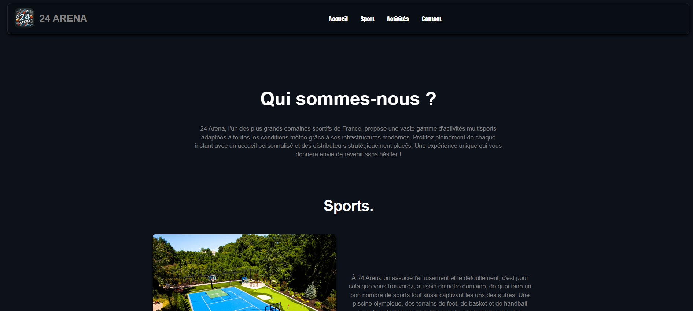
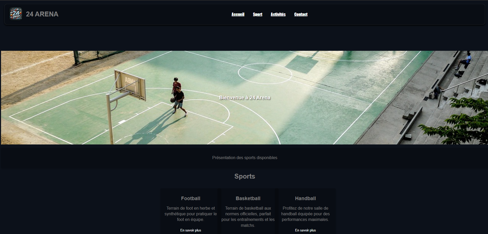

Gabriel DELPHA
Mes Projets
Communication Web pour une Activité de Divertissement
En quoi consiste ce Projet ?
Ce projet consiste en la conception et le développement d'un site web vitrine (HTML/CSS) pour promouvoir une structure de loisirs réelle ou fictive que nous devions imaginer.
L'objectif principal du projet est d'imaginer en binôme une base de loisir réelle ou fictive qui soit la plus attrayante possible. Dans un second temps, en réaliser un site web de A à Z afin d'approfondir nos compétences dans l'utilisation du code Html et css.
J'ai choisi de créer le site web d'un domaine sportif complet proposant une multitude d'activités physiques. Le site permet aux utilisateurs de naviguer intuitivement pour découvrir les différentes sports accessibles, le lieu du domaine ainsi que les différentes offres, consulter les informations pratiques et s'immerger dans l'ambiance du lieu grâce à un design soigné.
Ce projet met en œuvre les principes fondamentaux du développement web front-end et de l'intégration, notamment :
- La structuration sémantique des pages via HTML5
- La mise en page et le design responsive avec CSS3 (Flexbox)
- La gestion de la navigation et de l'ergonomie utilisateur
Structure et Contenu du Site


Pour offrir une expérience utilisateur fluide, j'ai structuré le site autour de deux grands pôles d'attraction (Sport et Activités), accessibles directement depuis l'accueil :
1. La Page d'Accueil
Point d'entrée du site, elle présente l'identité visuelle du complexe "24 Arena" et redirige vers les différentes catégories d'activités.
2. L'Univers "Sports"
Cette section regroupe les infrastructures dédiées à la pratique sportive physique. Une page principale liste les options, menant chacune vers une page dédiée :
- Football : Présentation des terrains intérieurs et extérieurs.
- Basketball : Informations sur les parquets et équipements disponibles.
- Handball : Détails sur les terrains homologués.
- Piscine : Espace aquatique pour la natation et la détente.
3. L'Univers "Activités"
Ce pôle se concentre sur les loisirs et le divertissement pur. Comme pour les sports, chaque activité dispose de sa propre page de présentation :
- Bowling : Présentation des pistes et de l'ambiance.
- Jeux d'Arcade : Zone dédiée aux jeux vidéo et bornes rétro.
- Karting : Informations sur la piste et les karts électriques.
- Laser Game : Présentation du labyrinthe et des équipements.
4. Contact
Une page dédiée permet aux visiteurs de trouver toutes les informations pratiques (localisation, horaires) et de contacter l'équipe via un formulaire.
Aperçu du Code
Le site a été construit sans framework, uniquement avec du HTML5 et du CSS3 pur, afin de maîtriser parfaitement les bases du positionnement et du style.
Accéder à la version en ligne du projet
Voir le site complet